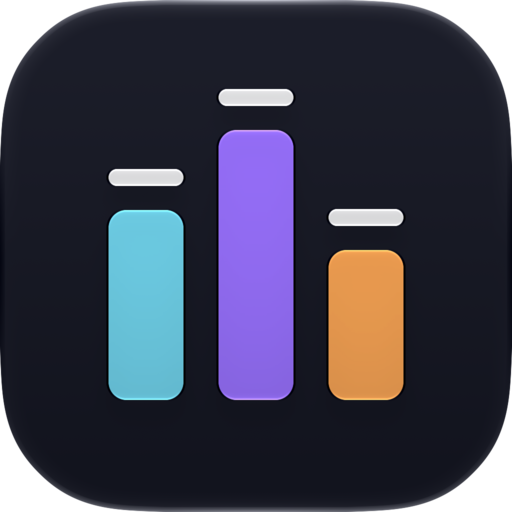

Lead
·—
The melody: a buzzing pulse with a sweeping width, a bright saw or a soft triangle, with vibrato on long notes.
A native Mac player for Commodore 64 music
All 60,000 tunes of the High Voltage SID Collection, fingerprinted by how they sound, with visualizers that draw the chip as it plays. Made of Liquid Glass, made for the Mac, on Phosphor's reSID and SIDLite engines.
Free and open source · macOS 27 or later · Apple silicon
The chip
The SID chip inside the Commodore 64 had three oscillators, four waveforms and one resonant filter. Composers built whole soundtracks from that: arpeggios flickering fast enough to pass for chords, bass and drums taking turns on a single voice. Resonance shows you how — the level, note and waveform of every voice, decoded from the chip's registers as the tune plays. Here's a tune doing just that, silently.
The melody: a buzzing pulse with a sweeping width, a bright saw or a soft triangle, with vibrato on long notes.
One voice racing through a chord fifty times a second, swept through the resonant filter.
An octave-bouncing bass, interrupted by noise-burst snares and pitch-dropping kicks.
Recognise the bars? They're the app icon: three voices, each with its peak-hold cap.
Discover by sound
In the background, Resonance plays every tune in HVSC silently and learns how it sounds: its waveforms, its arpeggios and filter sweeps, its drums and its bass. Then it can tell you what else sounds like the tune you love, across all 60,000 of them.
Now Playing
Press ⇧⌘F and the window becomes a player: the tune, its composer and a visualizer driven by the SID's own registers, frame by frame.
A glowing ring per voice that swells with its envelope and wobbles with its waveform's harmonics.
24,000 points on a turning sphere, a third per voice, rippling with its envelope and sending a wave across on every new note.
A ring of spectrum bars per voice, lows meeting at the top and highs at the bottom, the rings turning opposite ways.
Every note becomes a point in 3D, placed by its timbre: the tune draws its own map as it plays.
The collection
No collection yet? Click Download and Resonance fetches the High Voltage SID Collection. When a new release comes out, it says so, updates in one click, and shows what the release added: new tunes, new composers, new STIL notes.
Your music
Heart a tune into Favourites, shared with Phosphor. Make as many playlists as you like, drag tunes onto them from anywhere, and reorder them by hand. And wherever the music comes from, Resonance says so: “Playing from Rob Hubbard”, one click back to it.
Features
A SwiftUI app with a sidebar, a sortable playlist, an inspector and a floating glass transport bar — the layout you know from Music, made for SID.
A radio of random tunes from all of HVSC, picked one ahead, never repeating anything you've heard since launch.
⇧⌘R
The inspector shows each voice as a scope, as level bars with peak hold, or as its envelope, with the note and waveform it's playing.
A card for the composer, with STIL's notes on them and all their tunes a click away. Covers read “Cover of … by …”, STIL's stories are set as quotes, and HVSC's list of known bugs shows on the tunes it names.
Shows up in Control Center, answers your keyboard's media keys, and puts every command in a Playback menu.
SIDLite from libsidplayfp picks the chip model from each tune's header; reSID emulates the chip cycle by cycle.
Plays 2SID and 3SID tunes, mirrors 2SID tunes into stereo, and widens mono ones: Subtle, Medium or Wide.
Colour the voices in every visualizer: Resonance, C64, Noir, Ember, Abyss, Phosphor, Greyscale, or your own three colours and background.
The Songlengths database moves on at the right moment; unknown tunes get your default length. Step through subtunes with ⌥⌘← →.
Shares Phosphor's HVSC folder, song lengths, STIL, play history and favourites, and imports its settings in one click. Its own playlists and settings live apart, so neither app overwrites the other.
The library
Musicians, Games and Demos live in the sidebar, composers by handle and real name, with their tune count and years. Or just type: composers come first, then tunes, ranked across a category or all of HVSC, and typos still find their tune.
Keyboard
Every Playback command has a shortcut. Press one here and watch it light up.
Under the hood
Resonance doesn't reinvent SID playback. It compiles the engine of Phosphor, Marcin Spoczynski's open-source Rust player, without changing a line, and talks to it through UniFFI. Improvements upstream flow straight into the Mac app.
Same engine, different jobs. Got a USBSID-Pico or an Ultimate 64? Phosphor drives real hardware; Resonance doesn't, yet.
| Resonance | Phosphor | |
|---|---|---|
| Runs on | macOS 27, Apple silicon | macOS, Windows, Linux |
| Interface | SwiftUI, Liquid Glass | Iced (Rust) |
| reSID & SIDLite emulation | ✓ | ✓ |
| HVSC browser, search, Surprise Me | ✓ | ✓ |
| Songlengths & STIL | ✓ | ✓ |
| HVSC download, favourites, history | ✓ | ✓ |
| Sounds Like & Sound Map | ✓ | — |
| Control Center & media keys | ✓ | — |
| USBSID-Pico & Ultimate 64 | — | ✓ |
| Pedalboard FX, web remote, karaoke | — | ✓ |

Download
Checking for the latest release…
Open the download and drag Resonance into Applications.
No HVSC yet? Click Download next to Collection in the sidebar. Already have it? Resonance finds Phosphor's, or choose yours in Settings → Collection.
Surprise Me starts the radio. Or drop SID files, folders and M3U playlists onto the window.
You'll need Xcode 27 and Rust (brew install rustup && rustup default stable). The first build compiles the Rust engine and takes a few minutes; after that Xcode rebuilds it incrementally.
# Get the source
git clone https://github.com/ErikLuimes/resonance.git
cd resonance
# Build and launch
xcodebuild -project apple/Resonance.xcodeproj -scheme Resonance \
-derivedDataPath apple/build/DD build
open apple/build/DD/Build/Products/Debug/Resonance.appQuestions
No — Resonance has Phosphor's engine built in and downloads HVSC itself. The two do get along, though: they share Phosphor's data folder, so the collection, song lengths, STIL, play history and favourites are the same in both.
No. Click Download next to Collection in the sidebar and Resonance fetches the newest release of the High Voltage SID Collection, free, from an HVSC mirror. When a new release comes out it says so, and updates in one click. Already have a copy? Choose it in Settings → Collection.
Yes. Drop SID files, folders or M3U playlists onto the window, or press ⌘O; they go into My Playlist. Tunes outside HVSC play the same way, they just don't get STIL's notes.
Not yet. Resonance plays through software emulation — SIDLite or reSID. For real hardware, use Phosphor.
Macs with Apple silicon, running macOS 27 or later.
Your playlists are M3U files in ~/Library/Application Support/Resonance/Playlists, My Playlist is session.m3u next to them, and the sound fingerprints are a database in the same folder. Settings live in Resonance's own preferences. Play history and favourites are Phosphor's own files, which both apps share.
A few hours for all of HVSC, in the background, at low priority. It picks up where it left off, you can pause it in Settings → Collection, and Sounds Like fills in as it goes.
Not yet. A SID tune is a little C64 program that plays in real time, so jumping ahead means running it at full speed, silently, up to that point, and the engine can't do that yet. Subtunes are a different matter: step between them with the arrows next to the progress bar.